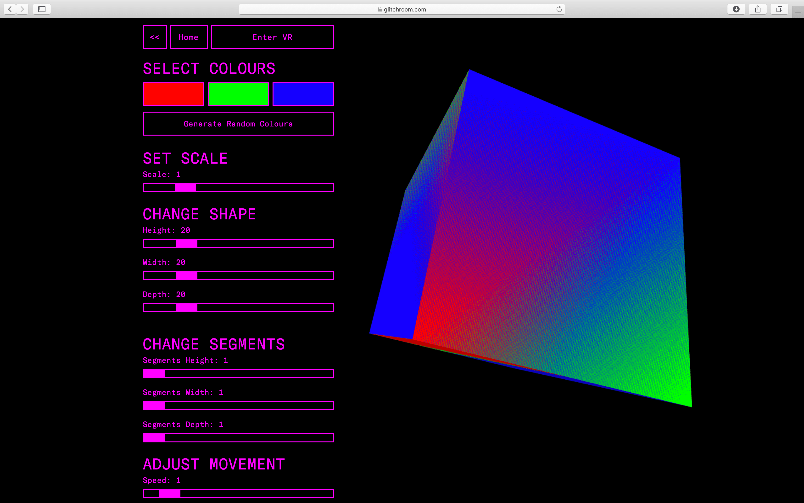
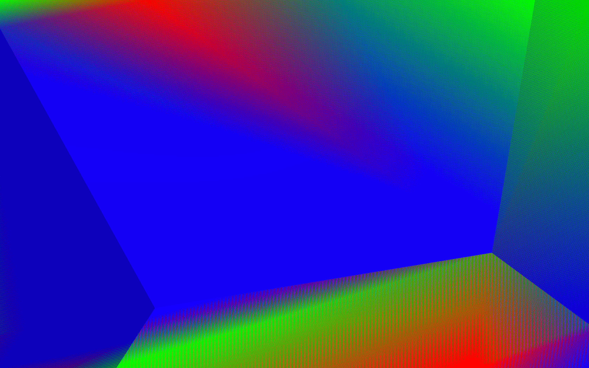

Critical Rationale
Well, I dislike reading difficult texts too. So, let’s just relax and have a little chat here. Probably starting off by a brief introduction of myself. My name is Nora, and I'm a graphic designer now living in the lovely city of London.
When I started doing this project, I saved loads of screenshot images generated by the code I wrote. Sat down, looked at them all day and felt happy. But then I suddenly realised that, this pure quantitive approach might just be me self-amusing. A good design must have its own reason to exist.
The way I validated this project is through making a system. In it, you can create your own artwork. This way, the reason for it to exist will be justified by you. Without you, there will be nothing running, only an empty shell, literately.
In this system, I have set up with some controls you can use to change the default look of the artefacts. In some case, you can even make things that looks super peculiar that it seems to be not coming from any of the models provided. I’d like you to explore and make your own digital object.
I also want you to have a different way of viewing and experiencing the thing you made too, and that’s why I made visual reality available. I hope that with VR, you can relax and just enjoy a moment or two of the time you spend with your art. Just like chilling in an empty room without distraction.
If you like the flickering pattern shown on your screen, I think you might be curious about why it happens, and why is it unique. The flickering effect is shown on your screen because, of course I made it like that, haha. But actually, it is supposed to be a ‘bug’, or call it more beautifully, a ‘glitch’. I just want you to see it differently here.
The glitch is called z-fighting. A very vivid name indeed. When things in 3D space are very close to each other or even overlap, they sort of ‘fighting’ with each other to be shown on the screen. Every millisecond your device is ‘deciding’ for each pixel, who wins and who loses. Just like games, you can’t certainly know what the results would be, and that’s why every moment the result it is one and only.
In the future, I think this pattern may even become your wallpaper, whether for your phone and laptop, or the actual wall in your home. I want to use your data to connect yourself with the object you made. To make it show how you are feeling. If I can, and if you allow me to.


Last, thank you so much for reading and exploring on glitchroom.com. Wish you have a good time here.